#1097: [WA] Clear Negative PCR tests (people)
Issue number 1097
hmhoffman opened this issue on February 12, 2021, 12:49 PM PST
State: WA
Dates affected: 02/08/21 - 02/11/21
Describe the issue: On February 8, 2021, we began capturing Negative PCR tests (specimens) and duplicated that column it into Negative PCR tests (people). However, this figure represents specimens, not people, and should not have been captured as Negative PCR tests (people). On February 12, 2021, we cleared our timeseries of Washington's Negative PCR tests (people).
Comments
#1097: [WA] Clear Negative PCR tests (people)
Issue number 1097
hmhoffman opened this issue on February 12, 2021, 12:49 PM PST
State: WA
Dates affected: 02/08/21 - 02/11/21
Describe the issue: On February 8, 2021, we began capturing Negative PCR tests (specimens) and duplicated that column it into Negative PCR tests (people). However, this figure represents specimens, not people, and should not have been captured as Negative PCR tests (people). On February 12, 2021, we cleared our timeseries of Washington's Negative PCR tests (people).
Comments
Rows edited: 4 WA 2021-02-11 negative: None (was 4506197) WA 2021-02-10 negative: None (was 4485964) WA 2021-02-09 negative: None (was 4464543) WA 2021-02-08 negative: None (was 4412414)
#1082: Removing values from the API field Negative from AK, CA, DC, GA, KY, NY, OH, OR, TX, VA and WA
Issue number 1082
jaclyde opened this issue on January 27, 2021, 3:13 PM PST
Labels Data quality
States: Alaska, California, Washington DC, Georgia, Kentucky, New York, Ohio, Oregon, Texas, Virginia, Washington
Issue: We are removing negatives that were created from mixed units (specimens minus cases or test encounters minus cases) for states that are using explicit totals in our main total test results field (called totalTestResults in the API). See the Data FAQ for additional explanation.
Comments
Alaska: Never reported negatives directly and always reported in specimens, removing total time series
Values Removed: Changes.txt
California: Never reported negatives directly, but did report in Total tests (people) until April 21, 2020. Removing time series from present to April 22, 2020.
Values Removed: Changes.txt
Washington DC: Never reported negatives directly, and has always reported encounters, removing total time series
Values Removed: Changes.txt
Georgia: Never reported negatives directly and always reported in specimens, removing total time series
Values Removed: Changes.txt
Kentucky: Never reported negatives directly and always reported in specimens, removing total time series
Values Removed: Changes.txt
New York: Never reported negatives directly and always reported in encounters, removing total time series
Values Removed: Changes.txt
Ohio: Never reported negatives directly and always reported in specimens, removing total time series
Values Removed: Changes.txt
Oregon: Never reported negatives directly, but did report in Total tests (people) until December 1, 2020. Removing time series from present to December 2, 2020.
Values Removed: Changes.txt
Texas: Never reported negatives directly and always reported in specimens, removing total time series
Values Removed: Changes.txt
Virginia: Never reported negatives directly and always reported in encounters, removing total time series
Values Removed: Changes.txt
Washington: Negatives were backfilled with values calculated from total tests (encounters)-confirmed cases in August 2020. Removing total time series.
Values Removed: Changes.txt
#1082: Removing values from the API field Negative from AK, CA, DC, GA, KY, NY, OH, OR, TX, VA and WA
Issue number 1082
jaclyde opened this issue on January 27, 2021, 3:13 PM PST
Labels Data quality
States: Alaska, California, Washington DC, Georgia, Kentucky, New York, Ohio, Oregon, Texas, Virginia, Washington
Issue: We are removing negatives that were created from mixed units (specimens minus cases or test encounters minus cases) for states that are using explicit totals in our main total test results field (called totalTestResults in the API). See the Data FAQ for additional explanation.
Comments
Alaska: Never reported negatives directly and always reported in specimens, removing total time series
Values Removed: Changes.txt
California: Never reported negatives directly, but did report in Total tests (people) until April 21, 2020. Removing time series from present to April 22, 2020.
Values Removed: Changes.txt
Washington DC: Never reported negatives directly, and has always reported encounters, removing total time series
Values Removed: Changes.txt
Georgia: Never reported negatives directly and always reported in specimens, removing total time series
Values Removed: Changes.txt
Kentucky: Never reported negatives directly and always reported in specimens, removing total time series
Values Removed: Changes.txt
New York: Never reported negatives directly and always reported in encounters, removing total time series
Values Removed: Changes.txt
Ohio: Never reported negatives directly and always reported in specimens, removing total time series
Values Removed: Changes.txt
Oregon: Never reported negatives directly, but did report in Total tests (people) until December 1, 2020. Removing time series from present to December 2, 2020.
Values Removed: Changes.txt
Texas: Never reported negatives directly and always reported in specimens, removing total time series
Values Removed: Changes.txt
Virginia: Never reported negatives directly and always reported in encounters, removing total time series
Values Removed: Changes.txt
Washington: Negatives were backfilled with values calculated from total tests (encounters)-confirmed cases in August 2020. Removing total time series.
Values Removed: Changes.txt
#1023: [WA] Clear confirmed deaths time series after 12/17
Issue number 1023
hmhoffman opened this issue on December 20, 2020, 7:00 PM PST
State: WA
Dates affected: 12/17-12/20
Describe the issue: On December 16, 2020, Washington added all Probable cases reported since June, 2020 to their data for December 16, 2020. Because Washington’s data is on a one day lag in our data, this affects our data for December 17, 2020. Because Washington's death data no longer includes only confirmed cases, we are clearing our time series of Confirmed Deaths from 12/17 and onwards.
Comments
Rows edited: 4 WA 2020-12-20 deathConfirmed: None (was 3104) WA 2020-12-19 deathConfirmed: None (was 3104) WA 2020-12-18 deathConfirmed: None (was 3117) WA 2020-12-17 deathConfirmed: None (was 3042)
#1021: Fix for WA Total PCR tests (test encounters) and Negative PCR tests (people) data problem on 12/18
Issue number 1021
theomichel opened this issue on December 19, 2020, 10:51 AM PST
Labels Data quality
State or US: WA
Describe the problem On 12/18, Washington's Total Tests number dropped from the 12/17 number of 3432892 to a much lower 2765404, before rising again on 12/19. CTP collected the lower number on 12/18, which was clearly a temporarily blip in their data.
The planned fix is to carry the 12/17 number forward to 12/18 in order to avoid a major spike in the curve.
Link to data source https://www.doh.wa.gov/Emergencies/COVID19/DataDashboard
Comments
Fixed!
Rows edited: 1 WA 2020-12-18 totalTestEncountersViral: 3432892 (was 2765404)
The same decision was made for WA's Negative PCR tests (specimens). Rows edited: 1 WA 2020-12-18 negative: 3226298 (was 2556060)
#1017: [WA] Backfill confirmed and probable cases from timeseries provided by Washington
Issue number 1017
muamichali opened this issue on December 18, 2020, 11:02 AM PST
Labels Data quality stale
State or US: Washington
Describe the problem ON 12/17/2020, Washington started providing a breakdown of confirmed and probable cases on its dashboard. The "Case counts" tab on the dashboard provides a historical time series of cases by specimen collection date. In order to present a more accurate view of when the probable cases were classified, we are going to backfill our historic time series, to reflect the cases on the dates the specimen was collected. We are also going to update the Cases (Confirmed and Proabable) values in our database to reflect the probable cases, and we are going to refresh the full time series of Positive Cases (PCR) so that it matches the probable and lumped timeseries.
Link to data source
Provide links to original data sources that we can refer to, like a state COVID website.

Comments
This issue has been automatically marked as stale because it has not had recent activity. It will be closed if no further activity occurs. Thank you for your contributions!
This issue has been closed because it was stale for 15 days, and there was no further activity on it for 10 days. You can feel free to re-open it if the issue is important, and label it as "not stale."
Good bot
#995: [WA] Backfill Currently hospitalized and Currently in ICU timeseries.
Issue number 995
hmhoffman opened this issue on December 4, 2020, 9:51 AM PST
State: WA
Dates affected: 5/13 - 12/3
Describe the issue: On December 3, 2020, we discovered a new source for Washington's Currently hospitalized and Currently in ICU. Starting on December 4, 2020, we will capture these metrics during our daily publish shifts, and apply this change retroactively going back to May 13, 2020 for Currently hospitalized, and September 19, 2020 for Currently in ICU.
Link to data source: https://coronavirus.wa.gov/what-you-need-know/covid-19-risk-assessment-dashboard
Comments
#897: [WA] Backfilling late update on 10/13
Issue number 897
the-daniel-lin opened this issue on October 14, 2020, 8:24 AM PDT
Labels Data quality
State or US: Washington
Describe the problem On 10/13, WA missed the cutoff time for our daily publication shift.
Link to data source https://www.doh.wa.gov/Emergencies/COVID19/DataDashboard
Backfilling with their dashboard which currently has data as of 10/12 11:59PM


Comments
BEFORE: 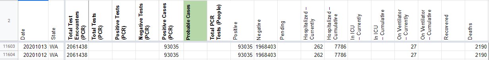
AFTER: 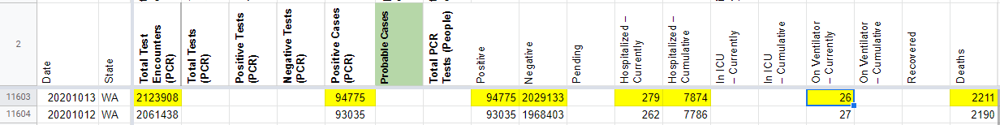
#861: [WA] Backfilling late update from 9/22
Issue number 861
the-daniel-lin opened this issue on September 23, 2020, 8:13 AM PDT
Labels Backfill Data quality
State or US: Washington
Describe the problem On 9/22, WA updated after the end of our publication shift.
Link to data source https://www.doh.wa.gov/Emergencies/COVID19/DataDashboard
Comments
BEFORE: 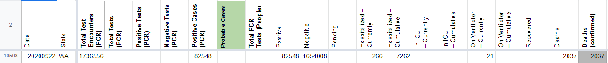
AFTER: 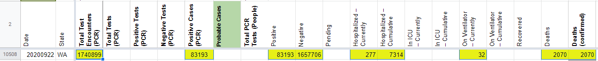
#828: [WA] Updated after pub shift on 9/12 and needs backfill
Issue number 828
the-daniel-lin opened this issue on September 14, 2020, 10:03 AM PDT
Labels Backfill Data quality Historical Data
State or US: Washington
Describe the problem On 9/12, WA had a late update and needs to be backfilled.
Link to data source Backfilling from this screenshot: https://covid-tracking-project-data.s3.us-east-1.amazonaws.com/state_screenshots/WA/WA-20200912-183200.png
Since we do not have screenshots of current hosp/vent values, we're carrying over those values from the previous day. archive.org did not have a record of this site for those days, either.
Comments
BEFORE: 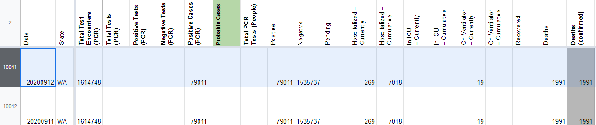
AFTER: 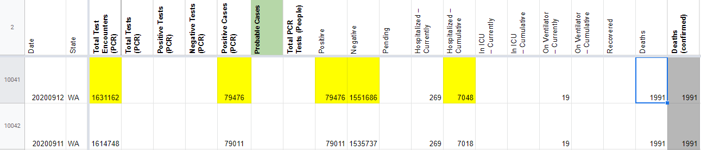
#820: [WA] Website was down during 9/8 pub shift so update was missed.
Issue number 820
jaclyde opened this issue on September 8, 2020, 8:59 PM PDT
Labels Data quality not stale
State: Washington
Problem: The WA Department of Health's websites were down during pub shift due to a storm, so the 9/8 update was missed.

Solution: The site is back up. Dashboard screenshot:

Hospital values screenshot:

Comments
This issue has been automatically marked as stale because it has not had recent activity. It will be closed if no further activity occurs. Thank you for your contributions!
This issue has been closed because it was stale for 15 days, and there was no further activity on it for 10 days. You can feel free to re-open it if the issue is important, and label it as "not stale."
#793: [WA] Washington revised their test count methodology from unique people to tests
Issue number 793
muamichali opened this issue on August 26, 2020, 12:05 PM PDT
Labels Data quality stale
State or US: WA
Describe the problem Washington has retroactively revised their test count methodology
Link to data source [ Copy of PUBLIC_Tests_by_Specimen_Collection.xlsx ](url)
Comments
- [x] Backfill
- Information was backfilled from WA XLS
Positive Cases (PCR)- sum of county information from XLSPositive- sum of county information from XLSNegative (People or Cases)- sum of county information from XLSTotal Test Encounters (PCR)- sum of positive + negative
- [x] Update future checking instructions in WS2 for
Negative (People or Cases)&Total Test Encounters (PCR) - [x] Remove values in
Total Test Results PCR (People)after 8/5
This issue has been automatically marked as stale because it has not had recent activity. It will be closed if no further activity occurs. Thank you for your contributions!
This issue has been closed because it was stale for 15 days, and there was no further activity on it for 10 days. You can feel free to re-open it if the issue is important, and label it as "not stale."
#685: [WA] PCL Historicals
Issue number 685
muamichali opened this issue on July 28, 2020, 7:21 AM PDT
Labels Backfill Data quality not stale
State or US: Washington
Describe the problem Our best understanding is that Washington reports only lab-confirmed PCR cases. The time series of column "Positive" and "Positive Cases (PCR)"column should be identical. However, there are multiple differences between the columns.
- From 2/29 to 6/22 the values are very different. These values were added by a previous back-fill Using this sheet
- Before 2/29 there are no values in
Link to data source
Comments
This issue has been automatically marked as stale because it has not had recent activity. It will be closed if no further activity occurs. Thank you for your contributions!
This issue has been closed because it was stale for 15 days, and there was no further activity on it for 10 days. You can feel free to re-open it if the issue is important, and label it as "not stale."
#570: [WA] 200 count lag in data
Issue number 570
camille-le opened this issue on July 3, 2020, 7:11 AM PDT
Labels Data quality stale
State or US: WA
Describe the problem "WA question from Front - looks like we have a 200ish count lag that causes a blip in our data. I didn't want to match the historical data without checking in" - @careeningspace
Link to data source N/A
Comments
Cumulative cases and death downloaded from WA's dashboard today
This issue has been automatically marked as stale because it has not had recent activity. It will be closed if no further activity occurs. Thank you for your contributions!
This issue has been closed because it was stale for 15 days, and there was no further activity on it for 10 days. You can feel free to re-open it if the issue is important, and label it as "not stale."
#537: [WA] WA PCRs off on 6/21
Issue number 537
pscsharon opened this issue on June 25, 2020, 3:40 PM PDT
Labels Data quality
On 6/21, we recorded 28,255 total cases, but it should be 28,225.
This affects "Positive Cases (PCR)" and "Positive Cases (People, confirmed + probable)".
Comments
{kind=link}
#517: [WA] has negative new cases for 2020-06-21
Issue number 517
dgdosen opened this issue on June 24, 2020, 3:52 PM PDT
Labels Data quality stale
State or US: Washington
Describe the problem getting data from https://covidtracking.com/api/v1/states/wa/daily.json shows: negative "positiveIncrease" for 2020-06-21 That shouldn't be possible
Link to data source https://covidtracking.com/api/v1/states/wa/daily.json
Comments
This issue has been automatically marked as stale because it has not had recent activity. It will be closed if no further activity occurs. Thank you for your contributions!
This issue has been automatically marked as stale because it has not had recent activity. It will be closed if no further activity occurs. Thank you for your contributions!
This issue has been closed because it was stale for 15 days, and there was no further activity on it for 10 days. You can feel free to re-open it if the issue is important, and label it as "not stale."
#478: [WA Historicals]
Issue number 478
muamichali opened this issue on June 7, 2020, 4:52 PM PDT
Labels Data quality stale
Washington State
Washington regularly reclassifies their cases based on illness onset. The new positive cases from the daily dashboard (and the screenshots captured by CTP) do not match the epi curve in Washington state.
Washington cases were obtained from PowerBI tab 2 (via JSON)

Washington tests were obtained from PowerBI tab 5 (via JSON)

Raw before and after data was saved in this spreadsheet
Patch was applied to the following day numbers to prevent artificial drop
BEFORE

AFTER

Comments
This issue has been automatically marked as stale because it has not had recent activity. It will be closed if no further activity occurs. Thank you for your contributions!
This issue has been closed because it was stale for 15 days, and there was no further activity on it for 10 days. You can feel free to re-open it if the issue is important, and label it as "not stale."
#467: WA historical for the last 3-4 days is borked
Issue number 467
stefanba3 opened this issue on May 22, 2020, 5:18 PM PDT
Labels stale

Comments
Disclaimer: I'm new here, so my opinions are based on limited context. But I have them in spades! :)
Looking at the screenshots associated with those days, it seems that the data entry was probably correct at the time of entry. (although checkers are not pulling this info from the main dashboard, so the numbers don't quite match the dashboard screenshots)
As I see it, the main issue here is that washington doesn't push new cases to their site "evenly" every day. They may queue up a batch and then dump it onto the site, and when they do, they assign each new case to the day it was reported to the doctor/hospital. (not the day it was posted to the site)
Since it's been a few days, the sequence of cumulative case counts for 5/17 through 5/22 now looks like this, according to washington:
5/17: 18782 5/18: 18962 5/19: 19139 5/20: 19273 5/21: 19422 5/22: 19731
The short term solution here is to do another data sync, similar to the one done in https://github.com/COVID19Tracking/issues/issues/424 and others.
The long term solution is some sort of regular backfill process for states that update their historical data over time. (there are several, washington is one example)
This issue has been automatically marked as stale because it has not had recent activity. It will be closed if no further activity occurs. Thank you for your contributions!
This issue has been closed because it was stale for 15 days, and there was no further activity on it for 10 days. You can feel free to re-open it if the issue is important, and label it as "not stale."
#454: Someone tried to add WA counties to counties.csv from covid-tracking-data
Issue number 454
julia326 opened this issue on May 25, 2020, 10:06 AM PDT
Labels stale
https://github.com/COVID19Tracking/covid-tracking-data/pull/64
(in case this is something we want to fix upstream, not sure what this affects)
Comments
I am not sure if the counties endpoint is used internally, maybe by visualization or race data folks? Perhaps @kevee knows?
We don't use it for anything ATM.
This issue has been automatically marked as stale because it has not had recent activity. It will be closed if no further activity occurs. Thank you for your contributions!
#440: WA 5/18 New Cases appear as negative
Issue number 440
muamichali opened this issue on May 21, 2020, 8:55 AM PDT
This is probably created by a historical data patch since WA regularly revises their data.
Front External Support Ticket; https://app.frontapp.com/open/cnv_82j3yoh
The data for Washington State on 5/18 - your data shows negative cases - and negative increases in positive cases.
Is there a way you can correct your data?
Related Issue: https://github.com/COVID19Tracking/issues/issues/424
Comments
I did another historical data patch for WA today based on the information in page 5 of their dashboard. They are currently reporting only tests performed up to 5/20 11:59PM
I adjusted yesterday's number to prevent negative case numbers to the same as 5/20 BEFORE 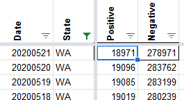
AFTER 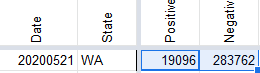
All the information including the raw JSON from WA DOH website is available here https://docs.google.com/spreadsheets/d/e/2PACX-1vTrTN4ZhOJo_DORpyHkTCNNL6-Ko_VQ0iI1qkYjlhL_MtxOWygRMRfsLtL-VY0d8uiFBNoeee7v3F8G/pubhtml
#383: WA data out of date and timestamp looks wrong
Issue number 383
easp opened this issue on May 7, 2020, 10:26 AM PDT
Page in question: https://covidtracking.com/data/state/washington
As of 10:15AM PDT:
"Last updated from our data: 1:12 pm EDT"
Data hasn't been updated to reflect last update on state website made 4:30pm PDT 5/6/2020 (which shows data as of Last updated: Tuesday May 5 2020 11:59 pm PDT).
Page lists last updated as "Last updated: Mon May 4 2020 11:59 pm EDT." Is that accurate, or should it reflect the state's cutoff time, which is 11:59 PDT?
Last screenshot, dated Wed May 6 2020 at 9:24PM (EDT) is blank (file exists, but renders as white).
Prior screenshots show the web page, but they don't show any data due to the sections being collapsed. Probably a result of how "screenshot" is taken. Some tools that allow capture of entire rendered webpage allow interaction with page before capturing final page state.
Screenshots are not of the page linked under best current data source. They are of this page
Comments
Thanks for contacting us @easp
Let me try to respond to all the points you raised
-
We publish the data daily around 4.30pm EST, so when a state adds data after our publishing cut off time, we capture it the following day. I think that's what happened when you looked at Washington this morning on the website.
-
Page lists last updated as "Last updated: Mon May 4 2020 11:59 pm EDT." Is that accurate, or should it reflect the state's cutoff time, which is 11:59 PDT?
We are going to look at this. It might be a timezone reporting issue
- Screenshots We updated the screenshots logic this morning to point to the dashboard since the main page recently stopped showing the data. We are looking into why the screenshot capturing tool got a blank page.
The timezone issue reported above as #2 should be fixed with https://github.com/COVID19Tracking/website/pull/848
#277: [States Daily CSV] Totals for WA data lower 2020-04-23 than 2020-04-22
Issue number 277
hrushka opened this issue on April 23, 2020, 3:21 PM PDT
Source: https://covidtracking.com/api/v1/states/daily.csv
Fileds: totalTestResults,positive,negative,deaths Date: 2020-04-23
Reference: https://c19.dev/d/4S5AN4CZz/covid-19-us-state-data?orgId=1&from=now-45d&to=now&var-state=WA&var-population=7614893&var-density=147.46721965695642&var-total_cases=12539&var-total_deaths=696
Comments
Hi @hrushka
Your website is great! I am seeing very different numbers on https://c19.dev/d/4S5AN4CZz/covid-19-us-state-data?panelId=2&fullscreen&orgId=1&from=now-45d&to=now&var-state=WA&var-population=7614893&var-density=147.46721965695642&var-total_cases=12539&var-total_deaths=696 than on our WA numbers. Positives and Testing numbers are off. Can you double check that you are using our numbers please?
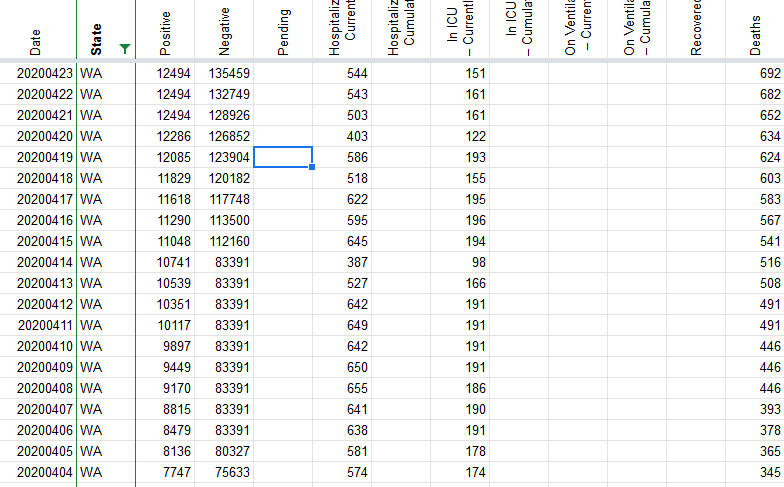
@muamichali hey thanks for checking on this, I found the error in my import. I was relying on the Hash column to be a primary key for the state and day, so I was duplicating days in certain instances!
#189: WA recent days not showing NA
Issue number 189
Jmuccigr opened this issue on April 13, 2020, 2:00 AM PDT
Labels stale
Washington hasn't done any reporting in two days, it looks like, but the data are showing zeroes instead of nulls for the relevant fields (e.g., all the -Increase fields).
PS the last screenshot on 4/12 seems to be an empty png.
Comments
@Jmuccigr thanks for raising the screenshot issue! I'll keep an eye on it but that should be fixed going forward. We're discussing how to handle the zeroes vs nulls question.
I live near Seattle and have a particular interest in the WA data -- if you need an extra set of hands/eyes to update/curate the WA data, I'd be happy to help.
This issue has been automatically marked as stale because it has not had recent activity. It will be closed if no further activity occurs. Thank you for your contributions!
This issue has been closed because it was stale for 15 days, and there was no further activity on it for 10 days. You can feel free to re-open it if the issue is important, and label it as "not stale."
#177: WA more than a little sporadic
Issue number 177
Jmuccigr opened this issue on April 10, 2020, 3:01 PM PDT
Since WA hasn't updated in 2 days, maybe it's time to note that and give them a grade somewhere south of A? 😄
PS A bunch of their recent zeroes should really be NA, no?
Comments
Done now. Closing.
#81: WA: state changed the format of their reporting page
Issue number 81
rainiernate opened this issue on March 29, 2020, 9:07 PM PDT
Labels Data source
Normally data was being pushed around 3p but today it went long overtime to about 9pm and they changed the whole format. I can't find a table unless I scroll down to the WA state map and click "Table View". The data pull for 3/29 is inaccurate.

Comments
Still not updated as of now.
Still @ 3/28
Washington State DOH is reporting an issue that prevents data from being updated.
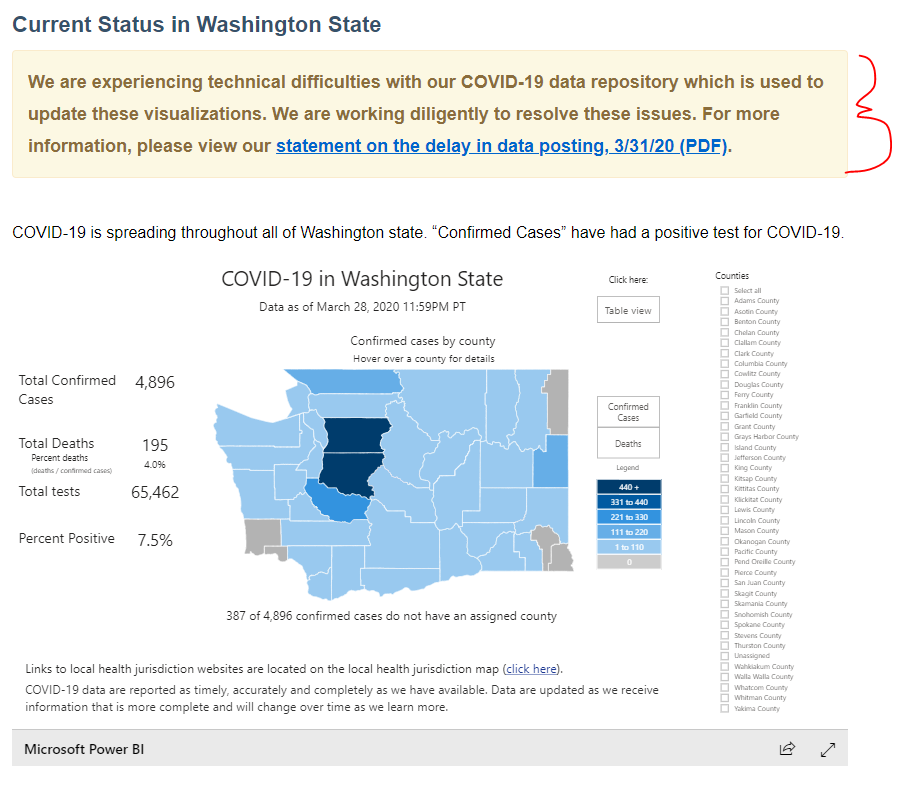
We are now regularly updating WA data to match. If you right-click on a chart, it will let you see the data in a tabular format. This is not great, but slightly better than mousing over the charts.
Please see Issue #233 for the most recent update.
Thanks!
#32: WA historical deaths
Issue number 32
ksenzee opened this issue on March 20, 2020, 7:59 PM PDT
Labels Historical Data
Washington state reported its first deaths on March 4, but the data doesn't include any deaths until March 11. I checked the Seattle Times daily updates for each of those dates and came up with this:
"2020-03-04": 10, // https://www.seattletimes.com/seattle-news/health/coronavirus-daily-update-march-4-what-we-know-so-far-about-covid-19-in-the-seattle-area-washington-state-and-the-nation/
"2020-03-05": 11, // https://www.seattletimes.com/seattle-news/health/coronavirus-daily-news-update-march-5-what-to-know-today-about-covid-19-in-the-seattle-area-washington-state-and-the-nation/
"2020-03-06": 14, // https://www.seattletimes.com/seattle-news/health/coronavirus-daily-news-update-march-6-what-to-know-today-about-covid-19-in-the-seattle-area-washington-state-and-the-nation/
"2020-03-07": 16, // https://www.seattletimes.com/seattle-news/coronavirus-deaths-in-washington-now-at-16-with-102-confirmed-cases/
"2020-03-08": 18, // https://www.seattletimes.com/seattle-news/health/coronavirus-daily-news-update-march-8-what-to-know-today-about-covid-19-in-the-seattle-area-washington-state-and-the-nation/
"2020-03-09": 22, // https://www.seattletimes.com/seattle-news/health/coronavirus-daily-news-update-march-9-what-to-know-today-about-covid-19-in-the-seattle-area-washington-state-and-the-nation/
"2020-03-10": 24 // https://www.seattletimes.com/seattle-news/health/coronavirus-daily-news-update-march-10-what-to-know-today-about-covid-19-in-the-seattle-area-washington-state-and-the-nation/
Comments
Thank you for the information! We will get that added to our data set as quickly as possible.
We started tracking around March 11. The CDC has also retrospectively reclassified some deaths as COVID deaths.
I think the first reported death was actually Feb 29: https://www.nbcnews.com/news/us-news/1st-coronavirus-death-u-s-officials-say-n1145931
On Mar 20, 2020, at 7:59 PM, Katherine Senzee notifications@github.com wrote:
Washington state reported its first deaths on March 4, but the data doesn't include any deaths until March 11. I checked the Seattle Times daily updates for each of those dates and came up with this:
"2020-03-04": 10, // https://www.seattletimes.com/seattle-news/health/coronavirus-daily-update-march-4-what-we-know-so-far-about-covid-19-in-the-seattle-area-washington-state-and-the-nation/ "2020-03-05": 11, // https://www.seattletimes.com/seattle-news/health/coronavirus-daily-news-update-march-5-what-to-know-today-about-covid-19-in-the-seattle-area-washington-state-and-the-nation/ "2020-03-06": 14, // https://www.seattletimes.com/seattle-news/health/coronavirus-daily-news-update-march-6-what-to-know-today-about-covid-19-in-the-seattle-area-washington-state-and-the-nation/ "2020-03-07": 16, // https://www.seattletimes.com/seattle-news/coronavirus-deaths-in-washington-now-at-16-with-102-confirmed-cases/ "2020-03-08": 18, // https://www.seattletimes.com/seattle-news/health/coronavirus-daily-news-update-march-8-what-to-know-today-about-covid-19-in-the-seattle-area-washington-state-and-the-nation/ "2020-03-09": 22, // https://www.seattletimes.com/seattle-news/health/coronavirus-daily-news-update-march-9-what-to-know-today-about-covid-19-in-the-seattle-area-washington-state-and-the-nation/ "2020-03-10": 24 // https://www.seattletimes.com/seattle-news/health/coronavirus-daily-news-update-march-10-what-to-know-today-about-covid-19-in-the-seattle-area-washington-state-and-the-nation/— You are receiving this because you are subscribed to this thread. Reply to this email directly, view it on GitHub, or unsubscribe.
Thank you for the information! We will get that added to our data set as quickly as possible.
We started tracking around March 11. The CDC has also retrospectively reclassified some deaths as COVID deaths.
I think the first reported death was actually Feb 29: https://www.nbcnews.com/news/us-news/1st-coronavirus-death-u-s-officials-say-n1145931
On Mar 20, 2020, at 7:59 PM, Katherine Senzee notifications@github.com wrote:
Washington state reported its first deaths on March 4, but the data doesn't include any deaths until March 11. I checked the Seattle Times daily updates for each of those dates and came up with this:
"2020-03-04": 10, // https://www.seattletimes.com/seattle-news/health/coronavirus-daily-update-march-4-what-we-know-so-far-about-covid-19-in-the-seattle-area-washington-state-and-the-nation/ "2020-03-05": 11, // https://www.seattletimes.com/seattle-news/health/coronavirus-daily-news-update-march-5-what-to-know-today-about-covid-19-in-the-seattle-area-washington-state-and-the-nation/ "2020-03-06": 14, // https://www.seattletimes.com/seattle-news/health/coronavirus-daily-news-update-march-6-what-to-know-today-about-covid-19-in-the-seattle-area-washington-state-and-the-nation/ "2020-03-07": 16, // https://www.seattletimes.com/seattle-news/coronavirus-deaths-in-washington-now-at-16-with-102-confirmed-cases/ "2020-03-08": 18, // https://www.seattletimes.com/seattle-news/health/coronavirus-daily-news-update-march-8-what-to-know-today-about-covid-19-in-the-seattle-area-washington-state-and-the-nation/ "2020-03-09": 22, // https://www.seattletimes.com/seattle-news/health/coronavirus-daily-news-update-march-9-what-to-know-today-about-covid-19-in-the-seattle-area-washington-state-and-the-nation/ "2020-03-10": 24 // https://www.seattletimes.com/seattle-news/health/coronavirus-daily-news-update-march-10-what-to-know-today-about-covid-19-in-the-seattle-area-washington-state-and-the-nation/— You are receiving this because you are subscribed to this thread. Reply to this email directly, view it on GitHub, or unsubscribe.
WA has been updated accordingly: 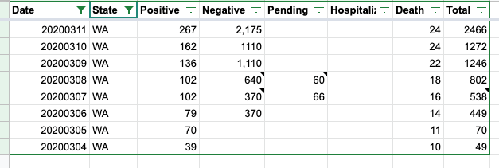
#7: WA: Need proxy setup
Issue number 7
joshellington opened this issue on March 11, 2020, 10:03 PM PDT
Currently all requests from urlwatch/curl/pyppeteer etc are failing due to an obfuscated Javascript redirect 😞. Attempts at getting around the redirect with various User Agents/Cookies/system time settings have failed so far.
We need help setting up a proxy that uses manually tuned headless browser behaviors to execute/follow the redirect. Zach found an issue containing potential solutions that deals with a similar issue (using puppeteer): https://github.com/puppeteer/puppeteer/issues/3323
Couple additional notes:
- "Real" browser requests are being transitioned through a URL like so: https://www.doh.wa.gov/TSPD/08d53046a7ab200030db30739056f4b6426264413af7c58414d4cc4d5281786dd10707e0eb2dbef4?type=8
- Cookie/
curldetails: https://covid-tracking.slack.com/archives/CUW8MKCD7/p1583988311288700 - Other header attempts: https://covid-tracking.slack.com/archives/CUW8MKCD7/p1583988346289300
Comments
Proxy is up and working!
Proxy is up and working!
#5: WA: all scraped data null
Issue number 5
lucasgonze opened this issue on March 11, 2020, 11:29 AM PDT
The data is still there but the parser is not finding the data. My generic table scanner picks it up. It is probably just an ID change.

Comments
Possibly getting thrown a loop through a load balancer/ddos: 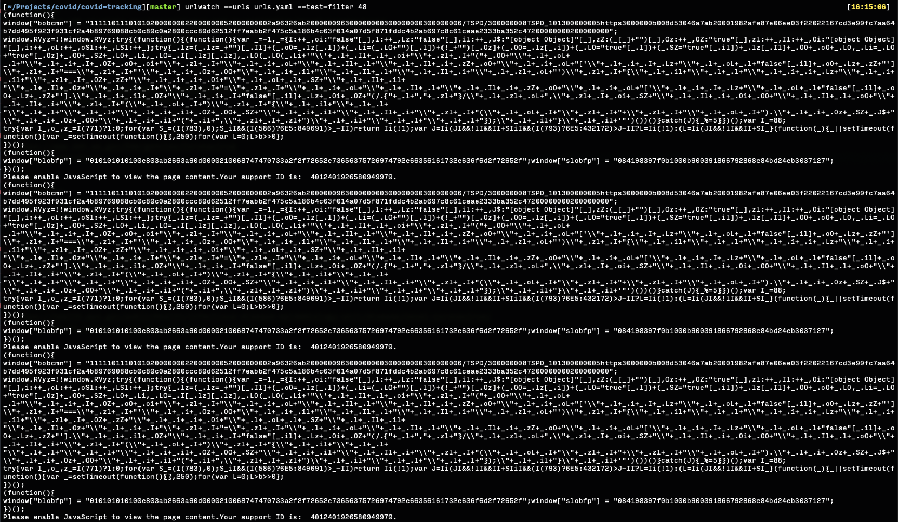
Initial curl investigation is showing a time-based, expiring (~30s?) cookie requirement, routed through: https://www.doh.wa.gov/TSPD/08d53046a7ab200005e61969b75632c19fd50c8e240a4437520fdcf1a06b6fdce989b827dd851460?type=8
Is this resolved? Please close or assign it back to me.
This was stale.
On Fri, Mar 20, 2020 at 3:51 PM Josh Ellington notifications@github.com wrote:
Closed #5 https://github.com/COVID19Tracking/issues/issues/5.
— You are receiving this because you were assigned. Reply to this email directly, view it on GitHub https://github.com/COVID19Tracking/issues/issues/5#event-3151133282, or unsubscribe https://github.com/notifications/unsubscribe-auth/AAA3HXKY3DJ3D7X7Q2HKAW3RIPXPVANCNFSM4LF4CBNQ .
Possibly getting thrown a loop through a load balancer/ddos:
Initial curl investigation is showing a time-based, expiring (~30s?) cookie requirement, routed through: https://www.doh.wa.gov/TSPD/08d53046a7ab200005e61969b75632c19fd50c8e240a4437520fdcf1a06b6fdce989b827dd851460?type=8
Is this resolved? Please close or assign it back to me.
This was stale.
On Fri, Mar 20, 2020 at 3:51 PM Josh Ellington notifications@github.com wrote:
Closed #5 https://github.com/COVID19Tracking/issues/issues/5.
— You are receiving this because you were assigned. Reply to this email directly, view it on GitHub https://github.com/COVID19Tracking/issues/issues/5#event-3151133282, or unsubscribe https://github.com/notifications/unsubscribe-auth/AAA3HXKY3DJ3D7X7Q2HKAW3RIPXPVANCNFSM4LF4CBNQ .
Rows edited: 4 WA 2021-02-11 negative: None (was 4506197) WA 2021-02-10 negative: None (was 4485964) WA 2021-02-09 negative: None (was 4464543) WA 2021-02-08 negative: None (was 4412414)